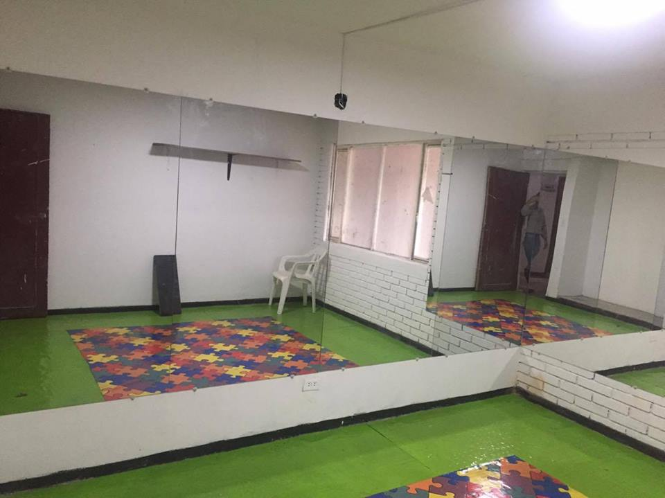

NO ESPERES
MATRICULAME

SI MAMA

YO QUIERO

TE ESPERAMOS
Misión
La misión del colegio LICEO INFANTIL MICHELIN en conjunto: padres de familia, estudiantes, educadores y colaboradores, buscando un camino de actitudes en dos formas:
Compartiendo vivencias que conllevan al conocimiento de cada uno, para asi alcanzar la inteligencia y la integridad del ser humano.
Promoviendo una actitud etica valores en cada uno de los individuos, que nos permitan mejorar la sociedad y hacer una convivencia armónica.
Visión
El colegio LICEO INFANTIL MICHELIN desea ser un organismo educativo transformador de nuestra sociedad, donde cada integrante de la comunidad educativa descubra y desarrolle las aptitudes permanentes, teniendo como base el fundamento de los valores.

Principios educativos del Liceo Michelin
El Liceo concibe la educación como un proceso transformador del prototipo del hombre Colombiano dotado de ideas, valores, sentimientos y costumbres propias de la Nación.
DERECHOS DE LOS NIÑOS: EL eje de la filosofia del colegio es el respeto de los derechos del niño proclamados en la constitución de 1991.
OBJETIVO PRINCIPAL: Cooperar con padres de familia al bienestar y la educación integral de sus hijos, para formar hombres que actúen en una sociedad libre y democrática.
OBJETIVO ESPECIFICO: Crear en el alumno la visión de un compromiso social que lo impulse a transmitir sin egoismo un deseo de cambio personal y familiar, y de superación para la comunidad.
Reseña historica del "Liceo Michelin"
Se considera fundadora de la institución a Maria Consuelo Rincón Pacheco Licenciada en educación y supervición Educativa.
NOMBRE: El titulo del Liceo encierra conceptos ideales apreciables, en el sentido de que un plantel educativo debe formar al niño como un ser integral en beneficio de la comunidad.

Primer semestreMes de integraciónFebrero 4 Inicio primer periodoFebrero 8 Reunión general de padres de familia Febrero Elección del personero Mes de los valoresMarzo 8 Izada de bandera día de la mujerMarzo 18 izada de bandera día del hombre Mes de los derechos y deberes de los niñosAbril 8 al 12 Evaluaciones y recuperaciones bimestralesAbril 12 Finaliza el primer periodo académico Abril 15 al 19 Semana Santa Abril 22 Inicio del Segundo periodo académico Abril 26 Entrega de boletines del primer periodo Mes del trabajo y de la madreMayo 1 Actividad sobre el trabajoMayo 6 Izada de bandera día de la tierra Mayo 10 Taller de padres Mayo 15 Día del educador Mayo 24 Salida pedagógica Mes del padreJunio 7 Izada de bandera día del medio ambienteJunio 17 al 21 Evaluaciones y recuperaciones bimestrales Junio 25 al 12 de julio Vacaciones de mitad de año Junio vacaciones recreativas |
CRONOGRAMA DE ACTIVIDADES AÑO 2019Este cronograma esta sujeto a cambios |
Segundo semestreMes de ColombiaJulio 15 Inicia el tercer periodo académicoJulio 19 Entrega de boletines del segundo periodo académico Julio 22 Izada de bandera de la independencia de Colombia Mes de las cometas y de BoyacáAgosto 6 Izada de bandera cumpleaños de Bogotá y batalla de BoyacáAgosto 16 Día de cometas Agosto 23 Salida pedagógica Mes del amor y la amistadSeptiembre 9 al 13 Evaluaciones y recuperaciones bimestralesSeptiembre 13 Fin del tercer periodo académico Septiembre 16 Inicia el cuarto periodo académico Septiembre 16 izada de bandera del día del amor y la amistad Septiembre 20 Entrega de boletines del tercer periodo académico Septiembre 26 Taller de padres Mes de los niños y de la razaOctubre 7 al 11 Receso escolarOctubre 17 Izada de bandera día de la raza Octubre 28 al 31 Semana cultural Mes de agradecimientosNoviembre 7 al 15 Evaluaciones y recuperaciones bimestralesNoviembre 15 Finaliza el cuarto periodo académico y jornada pedagógica Noviembre 23 Clausura Noviembre Vacaciones recreativas |

Parque: Liceo Michelin
Sala de Juegos: Liceo Michelin

Sala de baile: Liceo Michelin
Comedor: Liceo Michelin